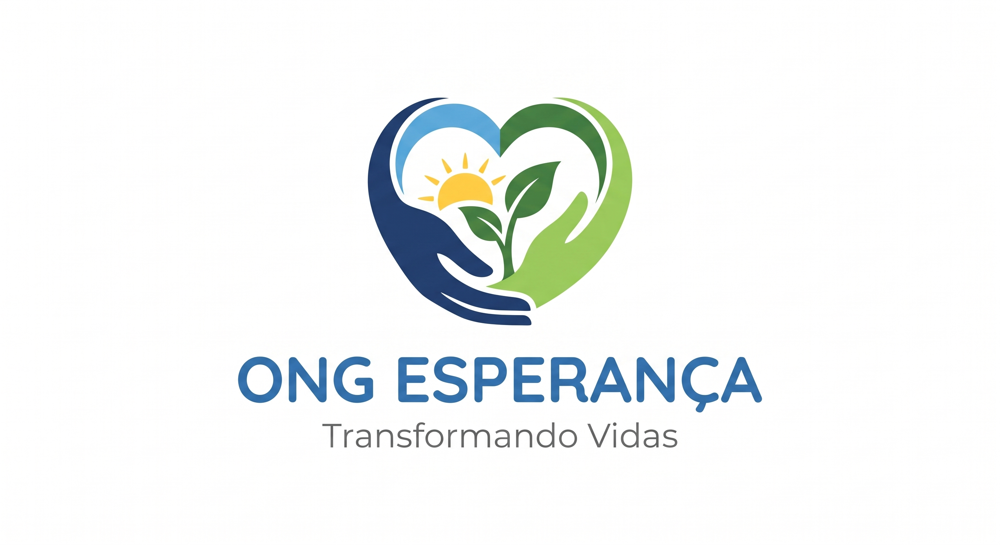

Projeto Ativo
Quero ser Voluntário
Apoio Educacional
Atuação direta no reforço escolar para crianças e adolescentes da rede pública.

Conheça nossas frentes de atuação e saiba como contribuir ativamente para a nossa missão.
Atuação direta no reforço escolar para crianças e adolescentes da rede pública.
Apoio na logística, triagem e entrega de cestas básicas em comunidades cadastradas.